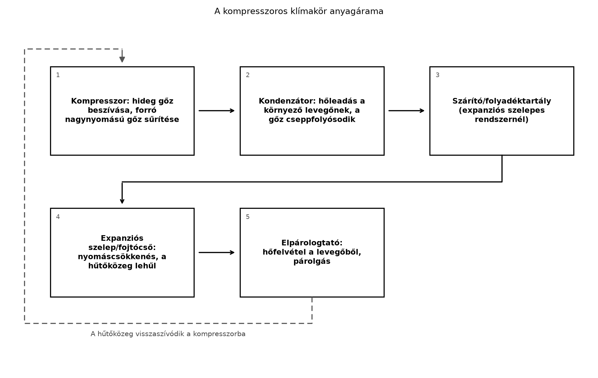

Az ügyfél gyakran úgy fogalmaz: „nem hűt a klíma”, „párásodik az ablak”, „zavaró szaga van a fűtésnek”, vagy „a klíma bekapcsolásakor furcsa hangot hallok”. Autószerelőként ezek mögött többféle hiba állhat: a hűtőközeg elfogyott, a kompresszor nem kapcsol be, a pollenszűrő eltömődött, vagy a szabályozás nem engedi a kompresszort. A fűtés, a szellőzés és a klíma egy rendszert alkot, amely a hőmérsékletet, a páratartalmat és a levegőtisztaságot együtt szabályozza. Ezt a rendszert akkor tudod szervizelni, ha érted a hűtőközeg körét, a levegőoldali áramlást és a vezérlést.
Képzeld el, hogy a motor hűtőrendszerét ismered a(z) A motor hűtése alfejezetből. Ott a hűtőfolyadék kering zárt körben, és a hűtő adja le a hőt a levegőnek. Az utastéri klímakör ehhez hasonló zárt kör, de nem vizet, hanem kis forráspontú hűtőközeget keringet, és az utastér oldalán, az elpárologtatóban hőt vesz fel a levegőből (így hűti), a felvett hőt pedig a kondenzátorban adja le a környezetnek. A következő folyamatábra a klímakör anyagáramát mutatja.

A hűtőkörön kívül ott van a levegőoldali rendszer is: a ventilátor, a pollenszűrő, a fűtő hőcserélője, valamint a keverő- és elosztócsappantyúk. Ha a klíma nem hűt, először gyakran a hűtőközeg nyomását és a levegő hőmérsékletét mérjük meg.
Definíció. Az utastéri klímaberendezés olyan rendszer, amely a jármű utasterének levegőhőmérsékletét, páratartalmát, tisztaságát és elosztását szabályozza. Részei a fűtőrendszer, a szellőző- és levegőelosztó részek, valamint a hűtőközeges hűtőkör.
Definíció. A hűtőközeg olyan anyag, amely a klímakörben alacsony forráspontja miatt az elpárologtatóban már kis nyomáson és alacsony hőmérsékleten elpárolog, közben hőt von el a levegőből, a kondenzátorban pedig magasabb nyomáson cseppfolyósodik, és hőt ad le.
Összefüggés. A levegő lehűtéséhez szükséges hőteljesítmény közelítőleg:
ahol a hűtőteljesítmény (W vagy kW), a levegő tömegárama (kg/s), a levegő állandó nyomáson vett fajhője (kb. ), a hőmérséklet-csökkenés (K). A pontosabb számításnál a levegő nedvességtartalmát és a páralecsapódás rejtett hőjét is figyelembe kell venni.
A levegőoldali rendszer központi eleme a műszerfal mögött elhelyezkedő légkezelő egység (HVAC-ház). Az utastéri ventilátor beszívja a friss levegőt vagy a belső keringtetett levegőt. A frisslevegő-bemeneten a pollenszűrő fogja meg a port, pollent és egyéb részecskéket. Ezért ha a belső levegő kellemetlen szagú, vagy a szélvédő lassabban párátlanodik, gyakran a pollenszűrő eltömődött.
A beszívott levegő ezután a fűtő hőcserélőjén halad át, amelyet a motor hűtőfolyadéka fűt. A forró hűtőfolyadék a motor hűtőköréből jön (lásd A motor hűtése), és a fűtő hőcserélőjében adja le a hő egy részét a levegőnek. A levegő hőmérsékletét a keverőcsappantyú állítja be: ha a csappantyú a hőcserélő fölé irányítja a levegőt, nagyobb a fűtés; ha a hőcserélőt megkerülő oldalra, hidegebb lesz a levegő. Az elosztócsappantyúk a lábtérre, a szélvédőre és a középső befúvókra irányítják a levegőt.
Kiegészítő fűtés. Hideg motornál, hibrid vagy elektromos járműnél a motor hűtőfolyadéka nem elég meleg, ezért a légkezelő egységbe beépített elektromos kiegészítő fűtés (gyakran PTC-ellenállású fűtőelem) gondoskodik az azonnali meleg levegőről. Dízelmotoros járműveken korábban a tüzelőanyaggal működő kiegészítő fűtők is elterjedtek; ezeket gyártó specifikáció szerint kell kezelni.
A hűtőkör fő elemei a kompresszor, a kondenzátor, a szárító/folyadéktartály (expanziós szelepes rendszerben), az expanziós eszköz és az elpárologtató.
Kompresszor. Feladata a hűtőközeg gőzének beszívása és összenyomása, így a hűtőközeg nyomása és hőmérséklete megnő. A magasabb nyomás lehetővé teszi, hogy a hűtőközeg a kondenzátorban a környezeti levegőnél magasabb hőmérsékleten is cseppfolyósodjon. A kompresszort hagyományosan a motorból szíjhajtás hajtotta, és elektromágneses tengelykapcsoló csatlakoztatta. Korszerű rendszereken szabályozott kompressort használnak, amely folyamatosan forog, de belső változtatható lökettérfogatú vagy belső szelepes szabályozással igazítja a teljesítményt. Hibrid és elektromos járműveken, illetve stop-start rendszerekben nagyfeszültségű vagy 12 V-os elektromos kompresszor működik.
HV-biztonság. A nagyfeszültségű elektromos kompresszor a jármű HV-rendszerének része: a narancssárga kábelekhez és a kompresszorhoz csak HV-jogosultsággal, a gyártói feszültségmentesítés és a feszültségmentesség ellenőrzése után szabad hozzányúlni (ellenőrizendő: gyártói eljárás, jogosultsági szint). Az ilyen kompresszorban az elektromos motor a hűtőközeg–olaj keverékben fut, ezért ilyen rendszerbe csak a gyártó által előírt, villamosan szigetelő kompresszorolaj tölthető; PAG-olajjal szennyezett szervizállomás szigetelési hibát és áramütésveszélyt okozhat, ezért külön szervizállomást vagy öblítést kell használni (ellenőrizendő: gyártói előírás).
A kompresszor a hűtőközeg-gőzt a kondenzátorba nyomja. A kondenzátor a hűtőhöz hasonló hűtőborda, általában a hűtő előtt helyezkedik el. A forró, nagynyomású gőz hőt ad le a rajta átáramló levegőnek, lehűl, és cseppfolyósodik: a gőz halmazállapot-változása kondenzáció.
A kondenzátor után a szárító/folyadéktartály fogja meg a nedvességet, és tárolja a folyadékot. Ez fontos, mert a hűtőkörbe beszivárgó nedvesség savat képezhet, és az expanziós szelepben megfagyva eltömődést okoz. Fojtócsöves rendszerben a kondenzátor után nincs külön nagynyomású szárító, hanem az elpárologtató után egy gyűjtőtartály (angolul accumulator; nem az indítóakkumulátor) található, amely a visszatérő hűtőközegből választja le a folyadékot.
A folyékony hűtőközeg ezután az expanziós szelepbe vagy a fojtócsőbe jut. Itt a hűtőközeg nyomása hirtelen csökken, a folyadék kitágul, lehűl, és részben elpárolog, így alacsony hőmérsékletű folyadék-gőz keverék jön létre. A termosztatikus expanziós szelep a hűtőközeg utánpárolgását szabályozza, és megakadályozza, hogy folyadék jusson a kompresszorba.
Az elpárologtató a hűtőlevegő oldalán helyezkedik el. Az alacsony nyomású, hideg hűtőközeg itt elpárolog, és nagy mennyiségű hőt von el a rajta áthaladó levegőből. A levegő lehűl, a levegőben lévő pára pedig kicsapódik az elpárologtató bordáin. A lecsapódott vizet el kell vezetni; ezért a jármű alatt a klíma üzemelésekor kis vízcsepegés tapasztalható. Az elpárologtatott hűtőközeg gőze visszaszívódik a kompresszorba, és a kör zárul.
A hűtőkörben tehát a hűtőközeg négy jellemző állapotváltozáson megy át: sűrítés (kompresszor), kondenzáció (kondenzátor), fojtás/nyomáscsökkenés (expanziós eszköz) és párolgás (elpárologtató). A hőt a levegőből az elpárologtatónál veszi fel, és a kondenzátornál adja le a környezetnek.
Az ábrán a nagynyomású ág (kompresszor → kondenzátor → szárítópatron → expanziós szelep) vastag folytonos, a kisnyomású ág (expanziós szelep → elpárologtató → kompresszor) vastag szaggatott vonal; a betűk a halmazállapotot jelölik. A nagynyomású szervizcsatlakozó (H) a nagyobb, a kisnyomású (L) a kisebb méretű, így a tömlők nem cserélhetők fel. A HTML-változatban az elemekre mutatva megjelenik a nyomásszint és a halmazállapot, és az áramlás iránya animálható.
A gépjármű-klímaberendezésekben leggyakrabban R134a (tetrafluor-etán) hűtőközeget használtak. Ennek az anyagnak azonban magas a globális felmelegedési potenciálja (GWP, az R134a-é kb. 1430). A járművek klímaberendezéseiről szóló 2006/40/EK (MAC) irányelv a 150-nél nagyobb GWP-jű hűtőközeget tiltja az új személygépkocsikban (új típusokra 2011-től, minden új járműre 2017-től; ellenőrizendő: hatályos irányelv és alkalmazási dátumok), ezért az új járművekben a gyártók R1234yf-re tértek át. Az R1234yf alacsonyabb GWP-értékű, de enyhén gyúlékony, ezért a szervizberendezésnek és a szivárgásvizsgálatnak erre alkalmasnak kell lennie. A R744 (szén-dioxid) rendszerekben nagyon magas nyomáson dolgozik, ezért szerkezeti és szervizelési követelményeik eltérőek.
A kompresszor kenésére a hűtőközeggel keveredő, speciális kompresszorolajat használnak, például PAG- vagy POE-alapú olajat. A hűtőközeg és az olaj típusa nem keverhető szabadon: R134a-rendszerbe való olajat nem önthetünk R1234yf-rendszerbe, és megfordítva.
Előírás. A fluortartalmú üvegházhatású gázok kezelésére, így a gépjármű-klímaberendezések szervizelésére is, az Európai Unió F-gáz rendelete ((EU) 2024/573; ellenőrizendő) és a hozzá kapcsolódó magyar végrehajtási jogszabályok vonatkoznak, amelyek a kezelést, a képesítést, a szivárgásellenőrzést és a nyilvántartást szabályozzák. A hűtőközeg légkörbe engedése tilos; a szerviztevékenységhez a hűtőközeg kezelésére jogosító képzés és az előírt szervizberendezés szükséges (ellenőrizendő: hatályos rendeletek pontos száma, képzési és nyilvántartási követelmények).
A kézi állítású klímánál a vezető maga választja a hőmérsékletet, a ventilátor-fokozatot és a levegőelosztást. Az automatikus klímaszabályozás viszont visszacsatolt szabályozókör, amely a kívánt hőmérsékletet érzékelők jelei alapján tartja be. A rendszer jellemző érzékelői:
A vezérlőegység az érzékelők jeleiből számítja a szükséges befújt levegő hőmérsékletét, és úgy állítja a keverőcsappantyút, a ventilátort, a kompresszort és a fűtőszelepet, hogy a belső hőmérséklet a beállított értékhez közelítsen. A korszerű rendszereken a motorvezérlővel is kommunikál, például a kompresszor terhelését a motor alapjárat-szabályozásához.
A klímarendszer ellenőrzésekor a következőket vizsgáljuk:
Ellenőrzőlista klímaszerviz előtt:
Egy ügyfél azt panaszolja, hogy a klíma csak meleg levegőt fúj, és a kompresszor nem kapcsol be. A műhelyben a járművet beindítjuk, a klímát maximális hűtésre állítjuk, a ventilátort közepes fokozatra. A kompresszor tengelykapcsolója nem húz be. A rendszerteszterrel kiolvassuk a klímavezérlő hibakódját, de nincs hiba. Ezután a szervizcsatlakozókra nyomásmérőket kötünk: az alacsony oldali nyomás csupán 0,3 bar, a magas oldali is alacsony. A nyomáskapcsoló emiatt letiltja a kompresszort, hogy ne szárazon sérüljön. Következtetés: hűtőközeg-szivárgás.
UV-lámpával és szivárgáskereső festék nyomaival a kondenzátor egyik csatlakozó O-gyűrűjénél enyhe olajos, fényes elszíneződést találunk. A rendszert a szervizberendezéssel lefejtjük, a maradék hűtőközeget visszanyerjük, a sérült O-gyűrűt kicseréljük. Vákuumozás után a vákuumot 10–15 percig figyeljük, majd a gyártó szerinti mennyiségű hűtőközeget és kompresszorolajat töltjük be. Ellenőrzésképpen újra elindítjuk a klímát: a nyomások normális tartományba kerülnek, az elpárologtató után a kifújt levegő 6°C. Az ügyfélnek elmondjuk, hogy szivárgás javítva, a rendszer szabályosan feltöltve.
Cél: a klímaberendezés hűtőkörének szivárgásvizsgálata, lefejtése, vákuumozása és feltöltése.
Jármű- és adatazonosítás: típus, alvázszám, a hűtőközeg típusa és töltetmennyisége a gyártói adattábláról.
Szükséges szerszámok és anyagok: klímaszerviz-állomás, hűtőközeg-palack (járműhöz való), kompresszorolaj, O-gyűrűk, UV-festék, elektronikus szivárgáskereső, nyomásmérő, védőkesztyű, védőszemüveg, gyűjtőedény.
Biztonsági korlát. A feladat tanműhelyi környezetre, oktató felügyeletére és a gyártói javítási utasítás betartására vonatkozik; a megadott értékek tanulási példák.
Munkavédelmi és környezetvédelmi lépések:
Munkalépések:
A képsor a munkalépéseket hat képkockába vonja össze: védőeszköz és adattábla (1. lépés), a kék L és a piros H gyorscsatlakozó felhelyezése (3.), lefejtés (4.), vákuumozás és tartáspróba (5–6.), olaj/UV-adalék pótlása és töltés tömegre (7–8.), végül működéspróba és a védősapkák visszahelyezése (9–10.). A HTML-változat lépésenként lejátszható, minden lépésnél az ellenőrzési ponttal.
Ellenőrzési pontok: a kifújt levegő hőmérséklete a gyártói tartományban, az alacsony/magas oldali nyomás a gyártói diagramon belül, nincs szivárgás, a kompresszor nem csúszik, a ventilátor megfelelően indul.
1. feladat (A) Sorold fel a kompresszoros klímakör fő elemeit a hűtőközeg útjának sorrendjében, és nevezd meg mindegyiknél a halmazállapotot vagy a nyomásviszonyt.
2. feladat (A) Melyik hűtőközeg miért terjedt el az új gépjárművekben? Említsd az R134a és az R1234yf közötti alapvető különbséget.
3. feladat (B) Számítsd ki a szükséges hűtőteljesítményt, ha a levegő tömegárama 0,15 kg/s, a levegő hőmérséklete az elpárologtató után 5 °C, előtte 28 °C, és a levegő fajhője 1,0 kJ/(kg·K). Az eredményt kW-ban add meg.
4. feladat (B) A gyártói adat szerint a klíma töltet 0,450 kg R1234yf. A szervizpalack mérlege a töltés előtt 9,900 kg, a töltés után 9,420 kg. Mekkora hűtőközeget töltöttek be? Helyes-e a mennyiség? Ha nem, mi lehet az eltérés oka?
5. feladat (C) Magyarázd el, hogy az automatikus klímaszabályozás hogyan akadályozza meg az elpárologtató lefagyását. Mely érzékelő jeleit használja, és milyen beavatkozást végez?
6. feladat (D) Ügyfél panasza: a klíma eleinte hűt, majd 10–15 perc múlva gyengül, és a kompresszor leáll. A nyomásmérés: alacsony oldal 3,0 bar, magas oldal 26 bar. A kondenzátor előtti légáramlás látszólag rendben, de a ventilátor csak alacsony fordulaton forog. Mi lehet a valószínű ok, és milyen lépésekkel javítanád?
Önellenőrzés – válaszok
Feladatok – megoldások
1. feladat megoldása. A sorrend: kompresszor (beszívott gőz, kimeneti forró nagynyomású gőz) → kondenzátor (magas nyomás, gőz→folyadék) → szárító/folyadéktartály (folyadék) → expanziós szelep/fojtócső (nyomáscsökkenés, folyadék-gőz keverék) → elpárologtató (alacsony nyomás, folyadék→gőz, hőfelvétel) → vissza a kompresszorba (alacsony nyomású gőz).
2. feladat megoldása. Az R134a magas GWP-értékű (kb. 1430), ezért a 2006/40/EK (MAC) irányelv új személygépkocsikban a 150-nél nagyobb GWP-jű hűtőközeget tiltja (ellenőrizendő: hatályos irányelv), a kezelését pedig az F-gáz rendelet szabályozza. Az új járművekben elterjedt R1234yf alacsonyabb GWP-jű, ezért környezetbarátabb, viszont enyhén gyúlékony. A hűtőközegek és olajaik nem keverhetők.
3. feladat megoldása. . .
4. feladat megoldása. Betöltött tömeg: . Ez 0,030 kg-mal több az előírt 0,450 kg-nál. A túltöltés hibás; a szervizberendezésben maradó tömlőhossz, a mérleg hibája, vagy a rendszerben maradt hűtőközeg okozhatja. Újra kell végezni a lefejtést, vákuumozást és pontos töltést.
5. feladat megoldása. Az automatikus klímavezérlő az elpárologtató-hőmérséklet-érzékelő jelét figyeli. Ha a hőmérséklet 0 °C közelébe csökken, a szabályzó csökkenti a kompresszor teljesítményét, vagy kikapcsolja a kompresszort, amíg a hőmérséklet meg nem emelkedik. Emellett a nyomásérzékelővel is védi a rendszert.
6. feladat megoldása. A magas oldali nyomás túl magas, az alacsony oldali is emelkedett, ami a kondenzátor elégtelen hűtésére utal. Ha a ventilátor csak alacsony fordulaton forog, a kondenzátor nem tud elegendő hőt leadni, ezért a nyomás megnő, és a nyomáskapcsoló leállítja a kompresszort. Javítás: a ventilátor vezérlésének, reléjének és motorjának ellenőrzése, szükség esetén a ventilátor javítása/cseréje, a kondenzátor bordák tisztítása, majd a rendszer ellenőrzése.
Az utastéri klímaberendezés a fűtést, a szellőzést és a hűtést együtt szabályozza. A levegőoldali rendszerben a ventilátor, a pollenszűrő, a fűtő hőcserélője, valamint a csappantyúk dolgoznak. A kompresszoros hűtőkör zárt rendszer: a kompresszor sűríti a hűtőközeg gőzét, a kondenzátorban a gőz cseppfolyósodik, a szárító megköti a nedvességet, az expanziós szelep vagy fojtócső csökkenti a nyomást, és az elpárologtatóban a hideg hűtőközeg hőt von el a levegőből, majd a gőz visszajut a kompresszorba. A hűtőközegek közül az R134a helyett egyre inkább az alacsony GWP-jű R1234yf terjed; az R744 nagynyomású rendszer. A hűtőközeg kezeléséhez az F-gáz szabályozás szerinti képesítés szükséges, a hűtőközeg légkörbe engedése tilos. Az automatikus klímaszabályozás érzékelőkkel tartja a beállított hőmérsékletet. Továbbvitt eredmény. A klímakör felépítését, a hűtőközegeket, a nyomásmérést és a klímaszerviz lépéseit az Elektronikus rendszerek javítása: ABS/ESP, légzsák, komfort, klíma és ADAS alfejezetben használjuk fel.
Forrástípusok: járműgyártói javítási utasítások és klímaszerviz-adatok, hűtőközeg-gyártói táblázatok, F-gáz rendelettel kapcsolatos uniós és hazai jogszabályok, klímaszerviz-berendezések gyártói kézikönyvei. Ellenőrizendő: az R134a telítési nyomás-táblázat értékei, az alacsony és magas oldali nyomás tartományai, a vákuumozás időtartama, a töltetmennyiségek, a hűtőközegek GWP-értékei, valamint az F-gáz szabályozás hatályos rendeletszámai és képzési követelményei.